Reorder Rewards
Our loyalty stamp card worked everywhere — except our marketplace markets, where 9 in 10 customers never reached a reward. I led design on a partner-funded mechanic that replaced it, taking the idea from a cross-functional workshop to a live experiment worth €927K in incremental order value across 3 markets.
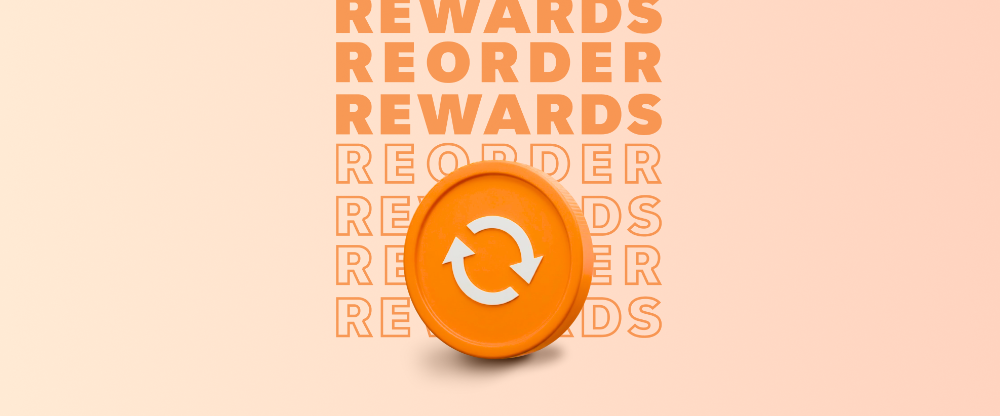
Users treated Just Eat as a treat, not a habit.
Order frequency in our marketplace markets was inconsistent, and the cost of re-acquiring lapsed customers was rising. Paid members at rival platforms spent 2–4× more and ordered 10–30% more — while showing exactly the cross-category behaviours we wanted, like grocery and retail penetration. 13% of our lapsed customers had left specifically for a competitor's paid loyalty programme, up 4 points year on year. Every major rival had launched a paid tier between 2017 and 2021. We had none.
That framing mattered: a campaign is a cost line that resets every quarter. A mechanic is an asset that compounds — so this needed a structural intervention, not a louder marketing ask.
"Consumers primarily switched to competitor products because they offered more compelling deals and superior reward programmes."
The only major marketplace without a paid tier.
Asked why they switched, customers were clear: nearly two-thirds of it was down to benefit mechanics we could design our way into — not headline price.
- Free delivery — 9.1%, the #1 driver of switching
- Fees — 9.0%
- Enhanced delivery — 8.9%
- Cashback — 7.4%
- Discounts & freebies — 6.5%
- Stamps & gamification — the weakest driver of the six
- Paid loyalty programme — 5 of 6 rivals had one. We didn't.
- Unlimited free delivery — 5 of 6 rivals offered it. We didn't.
- Personalised benefits — 4 of 6 rivals offered it. We didn't.
- Member-only offers — 0 of 6 rivals offered it. Neither did we.
- Stamps & gamification — we were the only one of the six who did. On the one mechanic that wasn't working.
Matching competitors on discount would have been a funded, repeatable cost — unsustainable at the business's current margins, and one that would have eaten straight into revenue. Beating them on mechanics was a design problem instead — a cheaper one to win.
Two tiers, one free of subscription revenue.
A subscription membership. The benefit is funded by us and recovered through subscription revenue.
No subscription. The benefit is funded by partners — the tier that had to carry marketplace markets, and this case study.
Which is the whole constraint: with no subscription revenue behind it, the free tier couldn't buy loyalty. The mechanic had to earn it. Three design principles followed from that:
Leading design across a multi-team programme.
I was the lead designer on Reorder Rewards end-to-end — from the original ideation session through to launch — directing a team of three designers while working horizontally across Commercial, Accounts, Loyalty, Research and Engineering.
Our loyalty stamp card was quietly broken.
In marketplace markets, the stamp card programme looked healthy on the surface — but underneath, both partners and customers were disengaging.
- Low awareness — some partners forgot they were even enrolled.
- Stamps took so long to accumulate that engagement faded.
- A large one-off payout landed on a customer's 6th order.
- Some partners cancelled orders to avoid paying it.
- Manual application at checkout — easy to forget.
- Low visibility of progress toward a reward.
- Long collection journeys rarely completed before expiry.
- Reward felt disconnected from the moment of ordering.
Order and stamp-card data across all 3 markets, from January 2026 to March 2026, showed exactly where it broke — and that the same mechanic worked fine elsewhere.
The gap opens at collection and widens at redemption — and it's three separate, independent problems, not one fixable bug. Fixing checkout friction alone wouldn't close it; only removing the manual steps entirely would.
From data to an idea worth testing.
Reorder Rewards wasn't a design-team idea handed down — it came out of a cross-collaborative ideation session with Commercial, Loyalty stakeholders and Design, working directly off the data on where the stamp card failed. My role in that room was to translate the data into design principles the group could ideate against — automatic, visible, instant.
10% back, automatically — no stamps, no code.
Reorder Rewards applies 10% automatically to a customer's next order — replacing a six-order collection journey and a manual voucher code with one thing: value on the very next order, not the sixth.
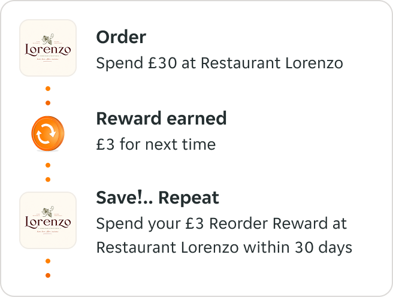
Who funds it, and who gains — a partner-funded model, not a discount budget.
Tested with both audiences before a line of code.
Moderated sessions with partners and customers, plus the UK-wide partner survey built with the Accounts team.
Valued it — but needed clarity
- Instant, automatic reward — no action needed from the customer
- Visibility & speed — accelerates reordering, lifts order volume
- Low barrier to join — no upfront fee, 3-month minimum
- Reward mechanism misread — 10% read as flat 10% off, not a capped reward
- Stacking rules unclear — a blocker for partners already running deals
- Performance metrics unclear — valued, but the relationship between them wasn't obvious
Understood it — and wanted proof
- Instant value — 10% back felt more tangible than a stamp card
- Automatic application — removes the anxiety of forgetting a code
- A reason to return — especially for frequent, multi-partner orderers
- Value missing at decision points — not visible at search or menu, where the choice is made
- No confirmation when earned — hard to tell what was being earned vs. redeemed
- Weak pull for infrequent users — 10% felt small next to flat promos; 30-day expiry created FOMO
Both audiences converged on the same thing: the mechanic worked, but its value wasn't legible or visible early enough. That told us where to spend design effort first. We tested the name too — "Reorder" beat "Repeat," and "Rewards" beat "Credit," which read as debt in Germany.
Turning research into flows partners and customers could trust.
Visibility across core funnel.
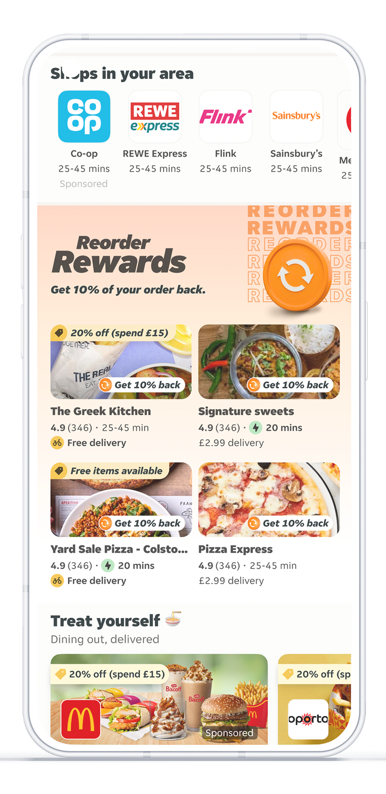
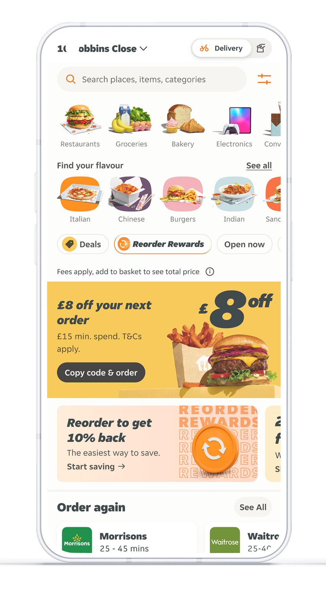
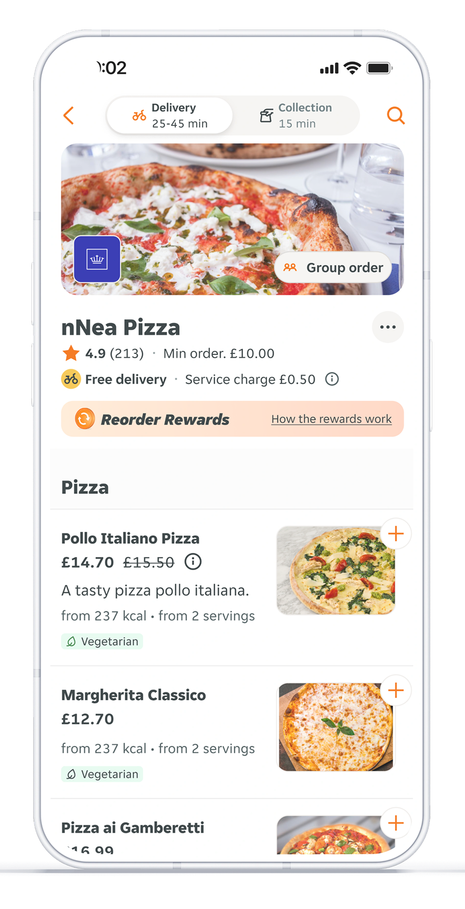
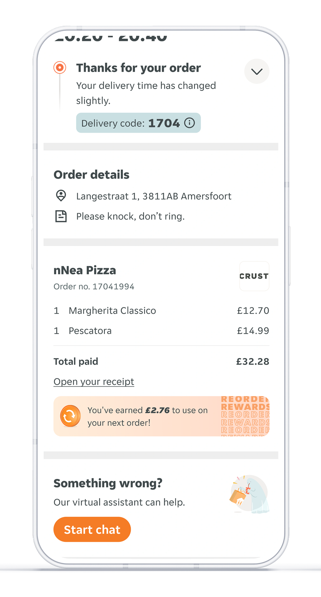
The Rewards Hub.
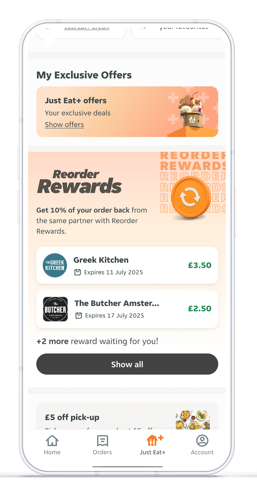
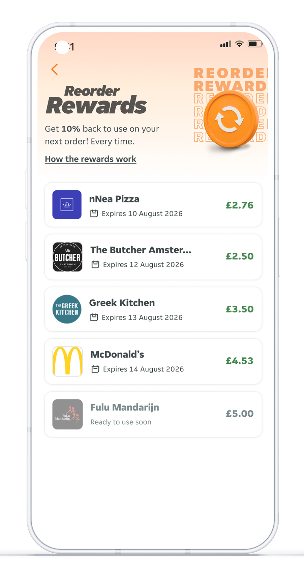
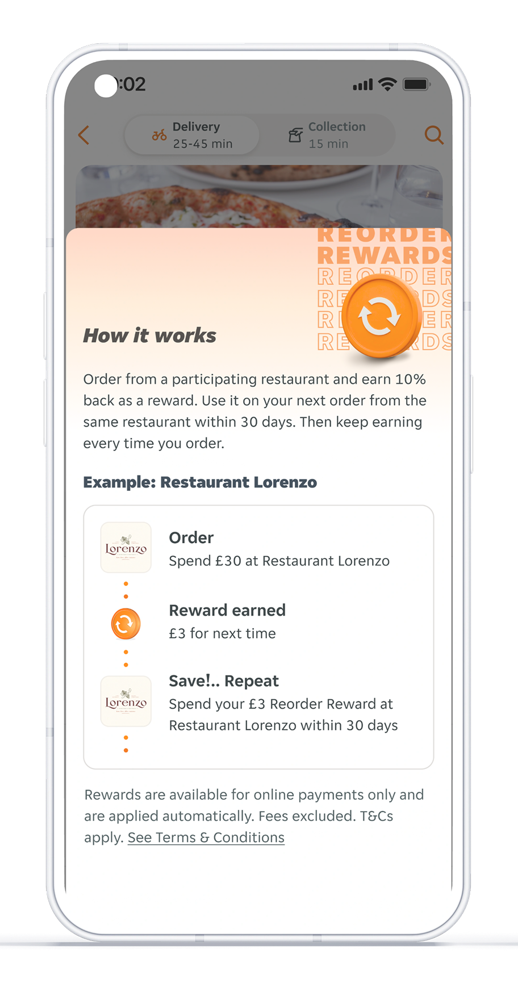
Event-based Rewards.
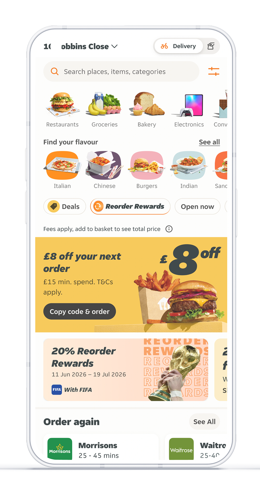
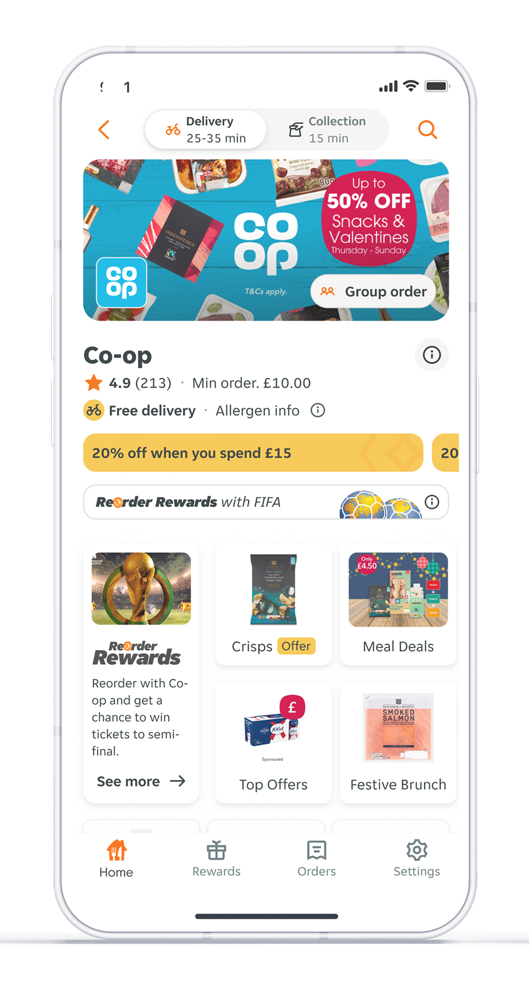
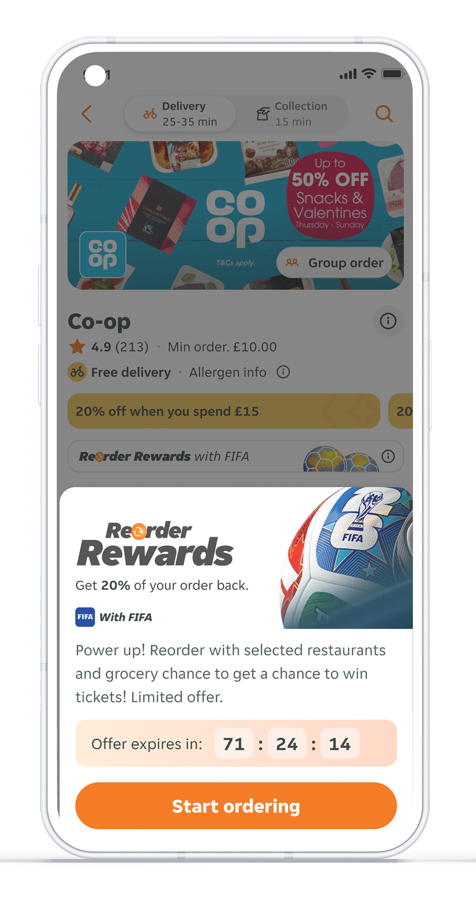
Partner-based Rewards.
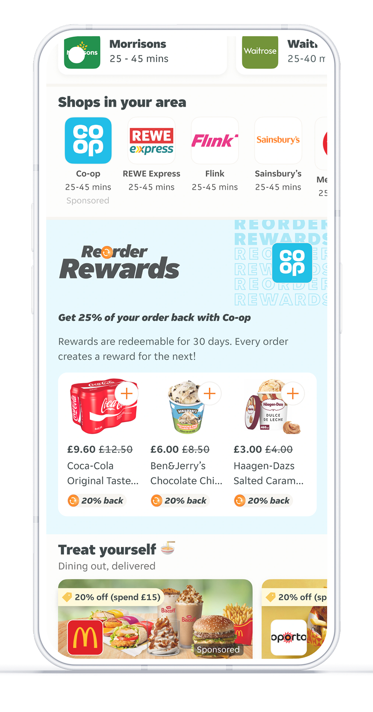
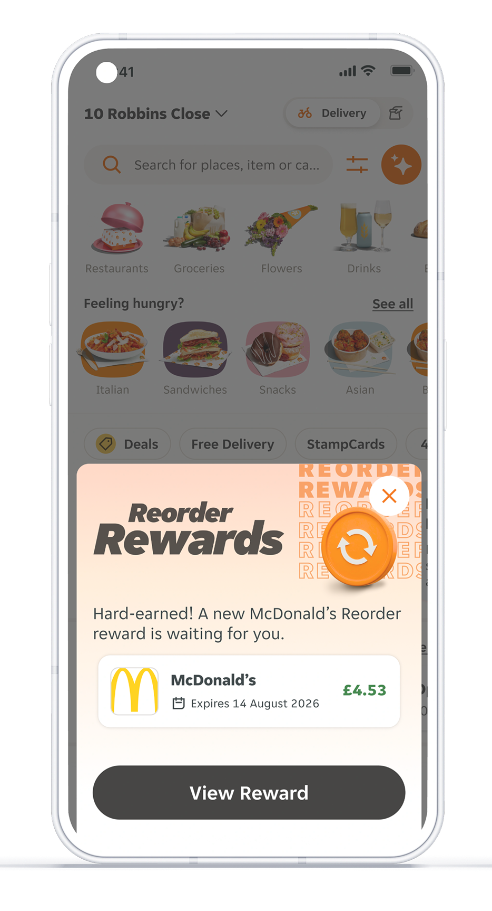
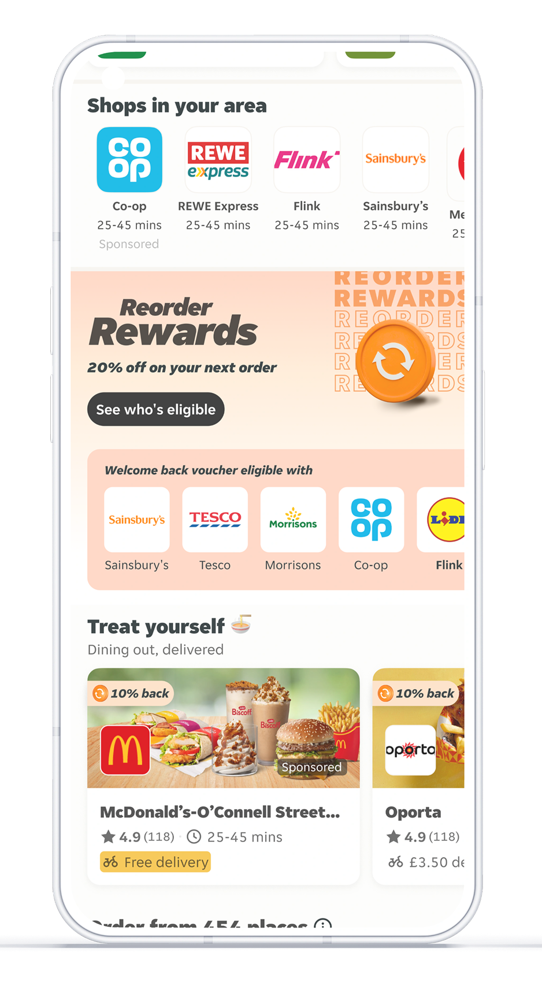
What we fixed before launch — and what we didn't.
Research surfaced six problems across partners and customers. Two blocked launch. Four were sequenced behind it.
Sequenced behind launch
- Stacking rules for chains — needed a commercial answer before a design one.
- Earned-reward confirmation — real, but it didn't stop anyone ordering.
- Weak pull for infrequent users — a pricing question, not a design one.
- Partner performance metrics — a reporting change, not a launch blocker.
The call I owned was the sequencing: which problems blocked launch and which could wait. Shipping with four known issues open was a deliberate choice.
The feature moved every metric that mattered.
Reorder Rewards live in marketplace (L-Takeaway) markets:
These results map back to the three problems found in discovery — automatic application closed the redemption gap, and earlier visibility got people ordering sooner.
What this project taught me about leading design.
What's next for the programme
- Roll out clearer stacking rules for chain partners
- Show earned-reward confirmation moments
- Surface value at SERP & menu across all markets
- Strengthen the offer for infrequent customers